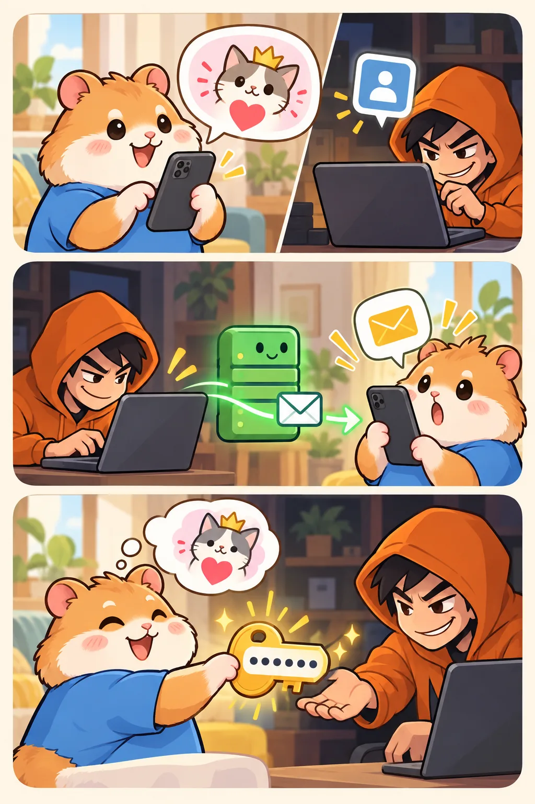
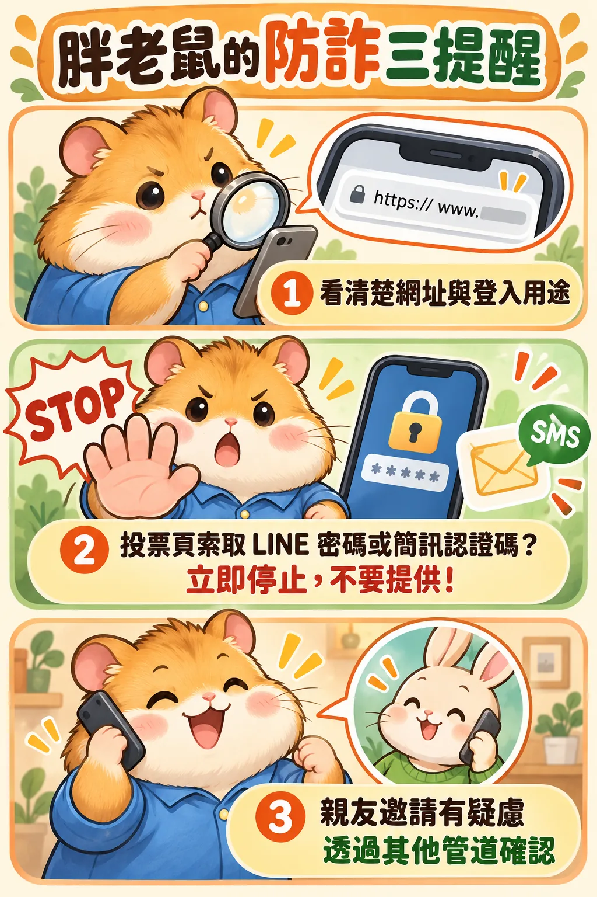

今天的課堂吉祥物，
你選哪一位？
選出你最喜歡的小夥伴，投下你的一票。
API 灰色經濟學 · 課堂互動
再一步，完成投票
你選擇了 。
為避免重複投票，請先完成 LINE 身分驗證。
輸入手機號碼
為避免重複投票，請填寫手機號碼以繼續。
請填寫驗證碼
情境中的投票頁會要求你輸入「手機收到的驗證碼」，宣稱完成後就能投票。
本課堂不會發送簡訊。
請使用模擬碼 123456，不要輸入任何真實簡訊認證碼。
請使用模擬碼 123456，不要輸入任何真實簡訊認證碼。
你以為在投票，對方在做什麼？

金色鑰匙代表認證碼；這是情境示意，並非真實 LINE 操作畫面。
以下為詐騙流程示意；本頁不會執行這些操作。實際註冊、登入或移動帳號所需步驟，依 LINE 當時的流程與帳號狀態而異。
- 你這一端在投票頁輸入並送出手機號碼
- 對方這一端知道有人正在操作頁面若假網站即時回傳資料，對方就能掌握你正在配合操作。
- 對方取得的資料同時拿到你的手機號碼
- 對方可能嘗試的動作在 LINE 註冊／登入等帳號流程中，嘗試以你的號碼觸發簡訊認證若流程允許，真正的認證簡訊會傳到你的手機。
- 回到你眼前的假頁面騙你在這裡輸入手機收到的認證碼說是「投票驗證」，實際上可能是 LINE 帳號操作的認證。
你以為在完成投票，卻可能正在替對方完成帳號驗證。
不要把 LINE 認證碼填進投票頁，也不要交給別人。
不要把 LINE 認證碼填進投票頁，也不要交給別人。
從「幫忙投票」，
到交出帳號的鑰匙
- 投票邀請，降低戒心訊息可能來自已被盜用的親友帳號，熟悉的名字不保證連結安全。
- 假登入，包裝成必要步驟以「避免重複投票」為由，引導到仿冒的登入或驗證畫面。
- 索取帳密與認證碼把帳號驗證說成投票驗證，誘使你交出敏感資訊。
- 帳號可能遭盜用攻擊者可能利用取得的資料冒用帳號，再向親友傳送詐騙訊息。
掃碼開網頁，不代表帳號已被盜。
要留意的是接下來的要求：輸入帳密、交出認證碼，或確認非本人發起的登入。
要留意的是接下來的要求：輸入帳密、交出認證碼，或確認非本人發起的登入。
下次，先停在這一步
